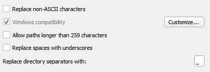
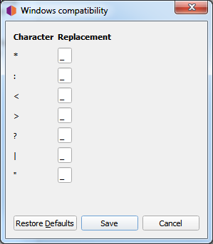

Options de compatibilité des noms de fichiers
{kind=link}
Ces options déterminent comment Picard gère la compatibilité des fichiers lorsqu’ils sont enregistrés avec des métadonnées mises à jour.
Remplacer les caractères non-ASCII
Sélectionnez cette option pour remplacer les caractères non ASCII par leur équivalent ASCII (par exemple : « á », « ä » et « ǎ » par « a »; « é », « ě » et « ë » par « e »; « æ » par « ae »). Vous trouverez de plus amples informations sur les caractères ASCII sur Wikipedia.
Compatibilité avec Windows
Cette option indique à Picard de remplacer tous les caractères incompatibles avec Windows par un underscore. Cette option est activée par défaut sur les systèmes Windows, sans possibilité de la désactiver.
Depuis la version 2.9, Picard permet à l’utilisateur de spécifier les caractères de remplacement à utiliser pour remplacer les caractères sélectionnés.

{kind=link}
Autoriser les chemins d’accès de plus de 259 caractères
Cette option permet à l’utilisateur de désactiver la limite du chemin d’accès de 259 caractères que Picard applique habituellement en mode de compatibilité Windows lors du renommage et/ou du déplacement de fichiers. Ceci est possible à la fois sous Windows et sur d’autres plateformes avec la compatibilité Windows activée.
Avertissement
L’activation des chemins d’accès longs sous Windows peut entraîner l’enregistrement de fichiers dont les noms de chemin d’accès dépassent la limite de 259 caractères traditionnellement imposée par l’API Windows. Certains logiciels pourraient ne pas être en mesure d’accéder correctement à ces fichiers. En particulier, l’Explorateur Windows ne peut pas renommer les fichiers avec des noms de chemin longs ou créer de nouveaux fichiers à l’intérieur des dossiers si la longueur du chemin résultant dépasse la limite de longueur.
Remplacer les espaces par des caractères de soulignement
Lorsqu’elle est activée, cette option indique à Picard de remplacer tous les espaces par des caractères de soulignement dans le chemin d’accès et le nom du fichier générés par le script de dénomination de fichier sélectionné.
Remplacer les séparateurs de répertoire par
Par défaut, Picard remplacera tout séparateur de chemin (slash ou backslash) par un trait de soulignement lorsqu’il utilisera une balise ou une valeur variable comme partie du chemin et du nom du fichier généré par le script de nommage de fichier sélectionné. Cette option permet à l’utilisateur de définir un caractère de remplacement différent de l’underscore.